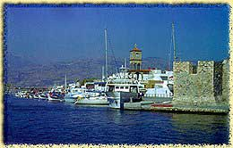

Κάστρο Ιεράπετρας
Ώρα καλή Γεράπετρα του κόσμου αυτοκρατόρισσα |
 Χτισμένο πάνω στη θάλασσα το βενετικό φρούριο, ο γνωστός Κουλές (ή Καλές, Καστέλι, Καζάρμα), που άρχισε να κατασκευάζεται από τον Ενετό Μοροζίνι (1212), υποδέχεται τον επισκέπτη στο λιμάνι της Ιεράπετρας. Μαζί με τις πολιορκίες εχθρών, δέχτηκε και την πολιορκία της φύσης, αφού τουλάχιστον δύο μεγάλοι σεισμοί (1508 και 1780) του κατάφεραν σοβαρές ζημιές. Αναφέρεται μάλιστα ότι στο μεγάλο σεισμό του 1780 σκοτώθηκαν 300 άνδρες της φρουράς του. | ||